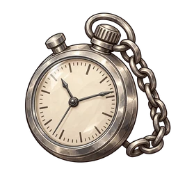

Stoppuhr
SR Accessoire
Stoppuhr an einer Kette. Verlängert die Haltezeit der Fallen etwas.
Überblick
| Teil | Accessoire |
|---|---|
| Seltenheit | SR |
| HP auf Lv1 | 15 |
| Fixe HP pro Level | 1 |
| HP-Wachstumsrate | x1.04 |
| Los | Kauflos: Ab Stufe 51 (Banner 5, Banner 6, Banner 7, Banner 8, Banner 9, Banner 10) |
Fähigkeiten
- Fesseln, Lähmung, Einfrieren und Schlaf halten 1 Runde(n) länger
HP pro Level
HP auf Level L = gerundet(Basis-HP x Wachstum^(L-1)) + abgerundet(fixe HP pro Level x (L-1))
| Lv | HP |
|---|---|
| Lv1 | 15 |
| Lv10 | 30 |
| Lv20 | 51 |
| Lv30 | 76 |
| Lv50 | 152 |
| Lv99 | 798 |
Das Levellimit beginnt bei 20; jedes Duplikat erhöht es um 10, bis maximal 99.